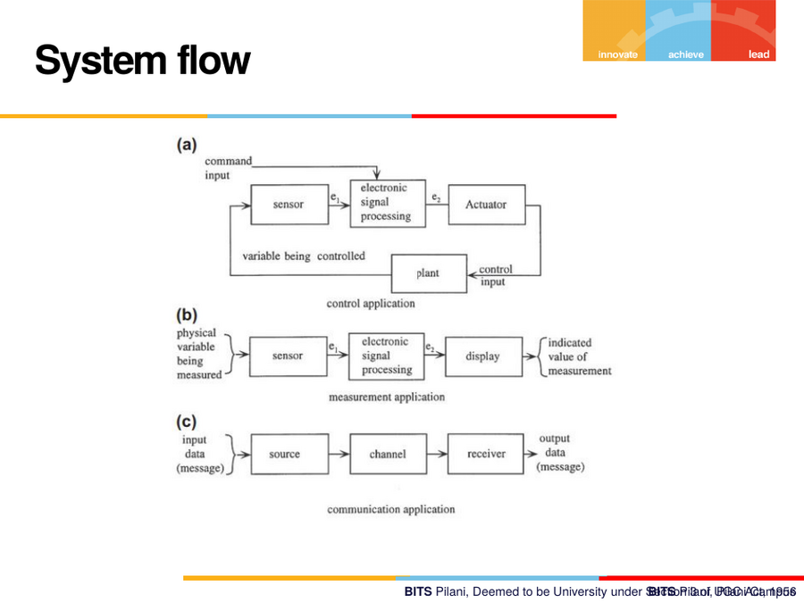
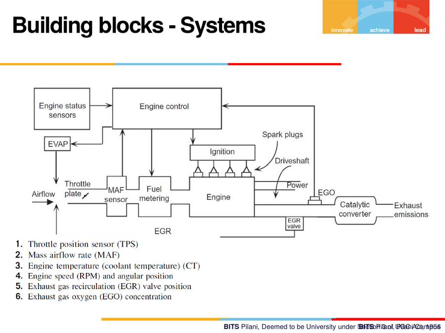
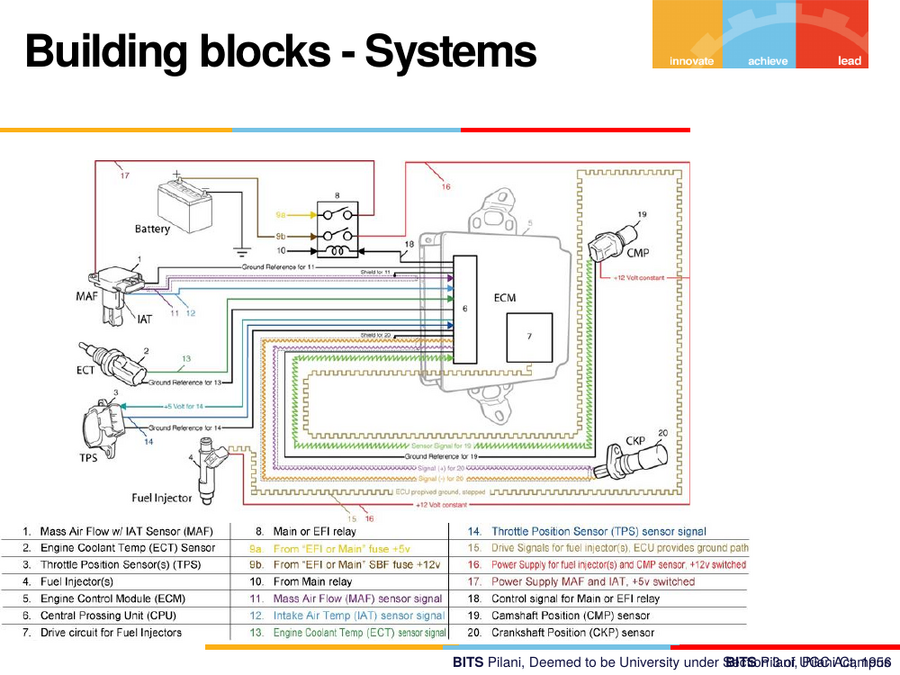
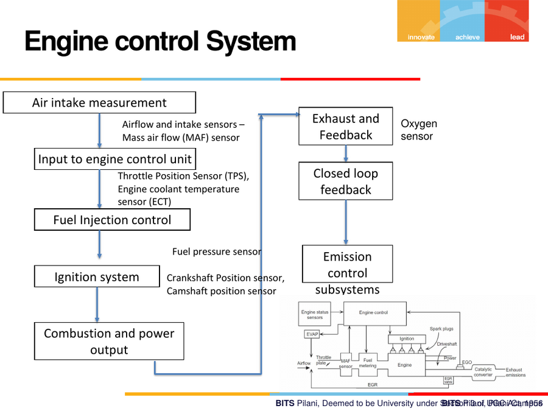
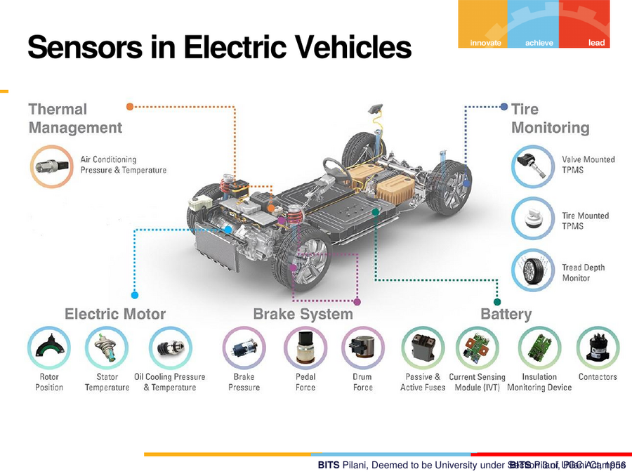
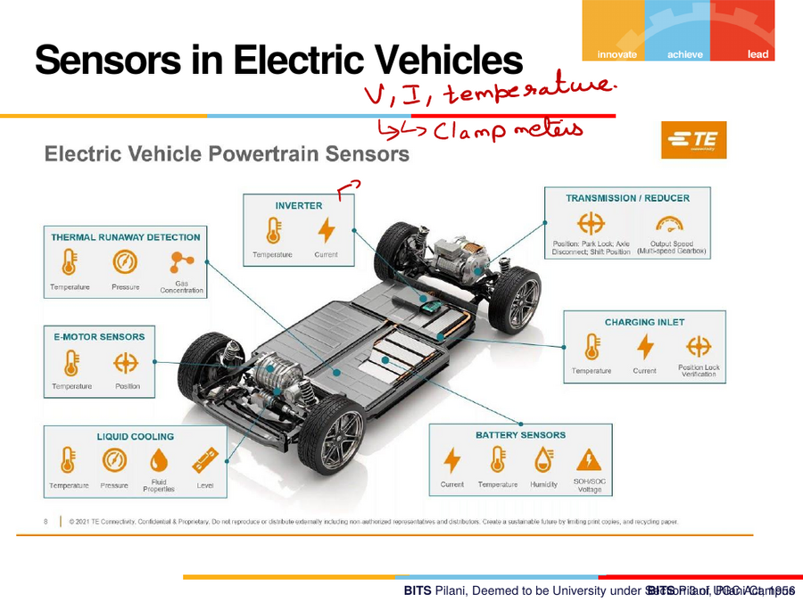

1. Systems & Signal Flow
1.1 The three canonical system flows
Every automotive electronic system is a variant of one of three flows:
(a) Control application (closed loop)
command input → [sensor] → electronic signal processing → [actuator] → plant
│
variable being controlled
│
(fed back as control input) ◄────┘
(b) Measurement/display application (open loop, no feedback)
physical variable being measured → [sensor] → electronic signal processing → [display] → indicated value
(c) Communication application
input data (message) → [source] → [channel] → [receiver] → output data (message)

Why is (a) closed-loop and (b) not? In (a) the system continuously monitors the controlled variable and feeds it back — e.g. active engine control. In (b), such as an "engine check" warning light, a sensor measures a physical variable and the result is only displayed; there is no on-board diagnostic action closing the loop back to a controller.
1.2 Building blocks of a vehicle system
At the top level, an engine status sensor feeds an engine control block, which coordinates:
- EVAP (evaporative emissions)
- Ignition — spark plugs, driveshaft, power
- Fuel metering — MAF sensor, airflow, throttle plate
- EGR (exhaust gas recirculation) valve → catalytic converter → exhaust emissions
- EGO (exhaust gas oxygen) sensor feedback
Six signals commonly named as the sensors of interest for this block:
- Throttle Position Sensor (TPS)
- Mass Airflow sensor (MAF)
- Engine (coolant) temperature sensor (ECT)
- Engine speed (RPM) and angular position
- Exhaust Gas Recirculation (EGR) valve position
- Exhaust Gas Oxygen (EGO) concentration

A real wiring-diagram view of this same subsystem (battery, ECM, MAF, TPS, IAT, injectors, relays) shows how these signals are physically wired in a vehicle:

1.3 Worked example — Engine Control System
The engine control system was used as the running example for the whole lecture. It breaks into these stages:
Air intake measurement
→ Airflow & intake sensors: MAF sensor, Exhaust & Feedback: Oxygen sensor
Input to engine control unit
→ Throttle Position Sensor (TPS), Engine Coolant Temperature sensor (ECT)
→ Closed loop feedback
Fuel Injection control
→ Fuel pressure sensor
Ignition system
→ Crankshaft Position sensor, Camshaft Position sensor
→ Emission control subsystems
Combustion and power output

Sensor → technology → signal table (built live in class)
| Subsystem | Sensor | Underlying technology | Typical output range |
|---|---|---|---|
| Air intake | MAF sensor (measures airflow through throttle plate) | Hot-wire (resistive, heat-loss based) | Analog, 0–5 V |
| Air intake | TPS (Throttle Position Sensor) | Potentiometer (variable resistance → voltage) | Analog, 0–5 V |
| Engine condition | ECT — Engine Coolant Temperature sensor | Thermistor (NTC/PTC — resistance varies with temperature) | Analog voltage, 0–5 V |
| Engine condition | Crankshaft Position sensor | Hall-effect or Inductive (varying magnetic field) | Digital (often via ADC directly) |
| Engine condition | Camshaft Position sensor | Hall-effect | Digital |
| Exhaust/emission | Oxygen sensor (Lambda sensor) | Electrochemical, calibrated as voltage | 0–1 V |
| Pressure | MAP sensor (Manifold Absolute Pressure) | Piezoelectric (capacitive) | Analog |
| Knock | Knock sensor | Piezoelectric (capacitive) | Analog |
Key idea: a potentiometer (TPS) is a variable resistance, but its
usable output is always a voltage — the resistance itself is never read
directly; it's converted to a voltage via a divider network (see
04-resistors-and-networks.md).
1.4 Sensors in Electric Vehicles
The same "what do we actually measure" question applies to EVs. Measurable subsystems around the EV powertrain:
- Thermal management — air conditioning, pressure & temperature
- Tyre monitoring — valve-mounted / tyre-mounted TPMS, tread depth
- Electric motor — rotor position, stator temperature
- Brake system — pedal force, drum force
- Battery — passive & active fuses, current-sensing module (IVT), insulation monitoring device, contactors


The only three measurable quantities
A recurring, explicitly emphasised point: in an EV powertrain (inverter, motor, battery, charging inlet, cooling), the sensors you actually place measure only:
Voltage, Current, and Temperature.
Everything else — State of Charge (SOC), power, speed, torque — is a calculated/derived value, not something you can put a sensor on directly. ("Please don't say that you will measure SOC or power — those are calculations.")
Practical measurement notes from class:
- Voltage is measured in parallel; current is measured in series — but you cannot cut a live battery wire to insert an ammeter. In practice, current in high-power circuits is measured using clamp meters, which work on the CT/PT (current transformer / potential transformer) principle — these are ultimately Hall-effect sensors.
- The throttle-position-sensor pattern (potentiometer → voltage divider) reappears everywhere; what differs between applications is how the measurement is wired and calibrated, not the underlying physics.
1.5 The generic instrumentation chain
Measurable quantity → [Sensor] → [Signal Conditioning] → [ADC] → ECU → [DAC] → [Actuator]
- Sensor output is analog (commonly assumed 0–5 V unless stated otherwise).
- Signal conditioning = amplification (weak mV/µV signals), attenuation (too-large signals), and filtering (e.g. removing noise around an engine knock signal so only the true knock component remains).
- ADC (Analog-to-Digital Converter) converts the conditioned analog signal to digital so the ECU (a digital processor) can use it.
- If the ECU needs to drive an analog actuator, a DAC (Digital-to-Analog Converter) converts back.
This chain is the justification for why the course needs to build up R, L, C, magnetics, signal conditioning, semiconductor switches, ADC/DAC, and digital fundamentals before returning to sensors in depth.